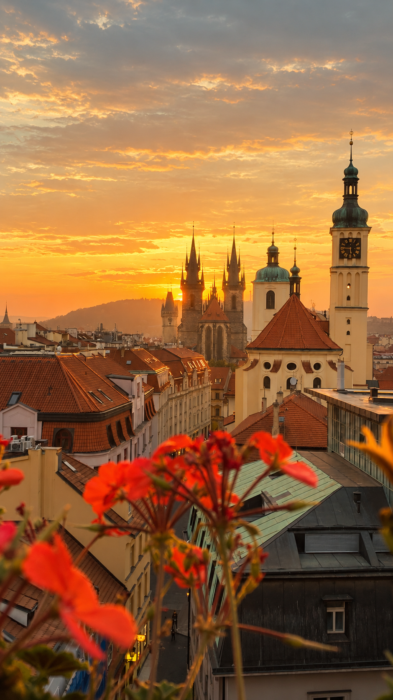

THE DIARY
Czech Republic 🇨🇿
Prague felt like stepping into another time. Wandering through its old streets, crossing bridges, looking up at towers, and discovering quiet corners made it the kind of place that asked you to slow down and simply take it all in.
The Photo Diary
Moments collected in Prague.

Old Town Square — early morning

Astronomical Clock

St. Vitus Cathedral

Walking through history

Sunset light

Path to the castle

Streets of Prague

Little details
More moments from Prague will be added soon. ✈️
Places
A few places collected along the way.
Old Town Square
Historic buildings, colorful façades, and one of Prague's most recognizable views.
Charles Bridge
One of those places where simply walking across becomes part of the memory.
Prague Castle
A place to wander, look back at the city, and see Prague from above.
Prague Streets
Quiet corners, old buildings, lamps, bridges, and all the little details in between.
From the Diary
Stories and guides will appear here as the diary grows.
Prague: A City That Felt Like a Storybook
A visual journey through the streets, architecture, atmosphere, and little moments that made Prague memorable.